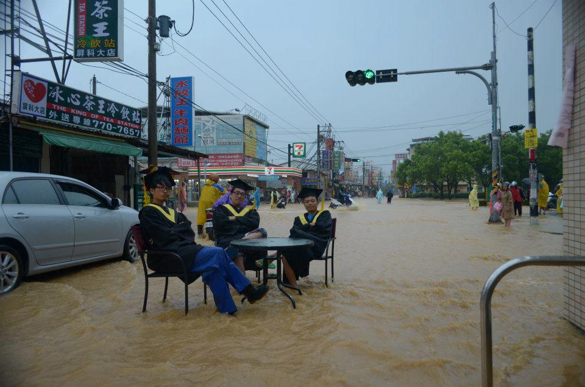
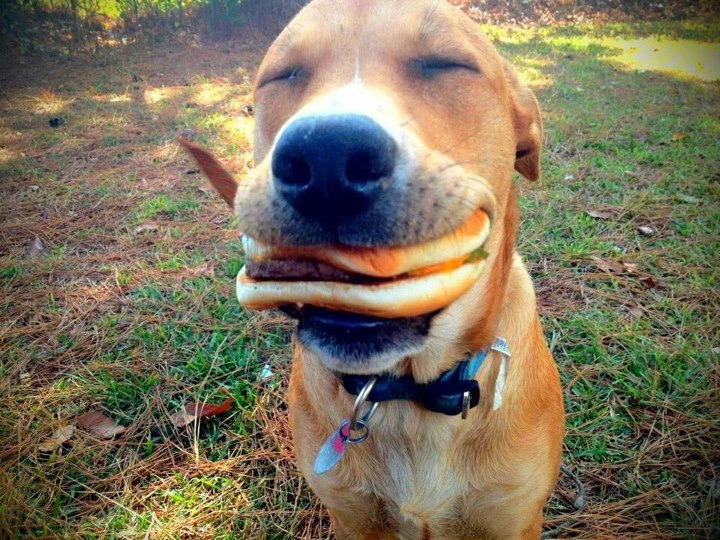
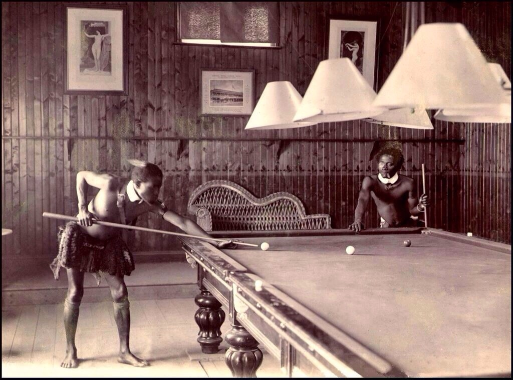
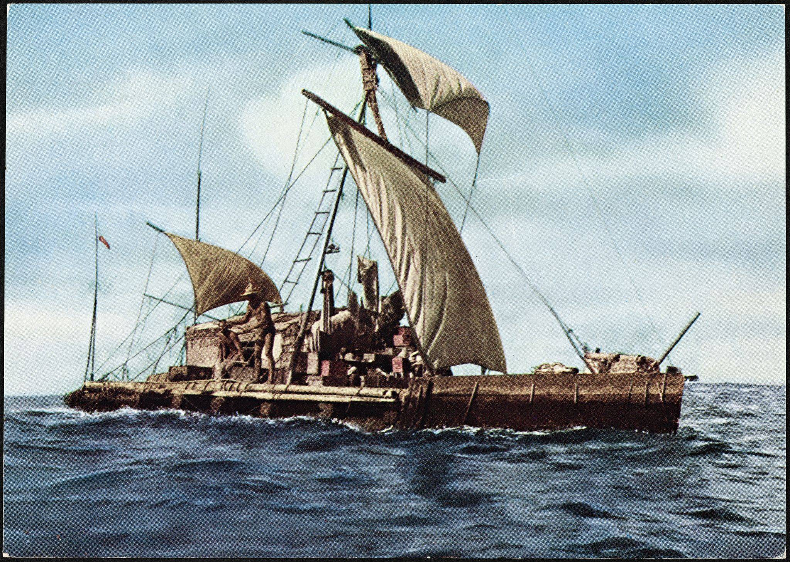
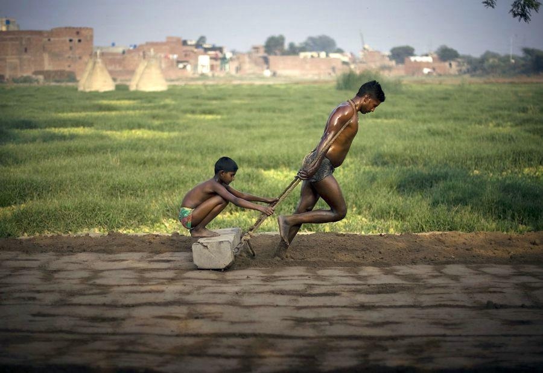

An Open Letter to My Father and Future Child
June 15, 2014
To the source of my strength and the culmination of my efforts,
It is good to have you two here in the same letter, on Father's Day. Here we can discuss exactly what it means to be a good father, and what that man has to offer to his child. I have spent this day reflecting on the gifts that I've received from my father and preparing them so that my future child will benefit from their wisdom.
I've thought long and hard about how I love my dad and why he does the things that make him great. After much deliberation and in the interest of good style, I have composed a list for you to carry along with you for all your days, my unborn child.
Rules I Have Learned from Your Grandfather:
When people deal with each other, it is always because they both want something. You must know what you want, say what you want, stand for what you want, and take all your steps towards it. When you don't get what you want, remember that anger and despair can only lead you further away from what is desired. They will never be part of a strategy that produces results.
Rain is no reason to call off a party.I promise I will never be too busy to help you find the answer to a why question because I sure know you'll need them when making uncertain decision later.
We'll get to the bottom of it.You can do whatever you want at the dinner table so long as you look like you genuinely want to be there.
Dad says: when in doubt, get a cheeseburger.It is important that you learn about how people got along before the appearance of the things you can't imagine life without. Not only is history dammned interesting, it will show you what you love in this world that is timeless and what is fleeting. Think about what it would feel like to actually be alive long ago to prevent taking your own time too seriously.
A game worth mastering.As your thirst for adventure grows and you make your way into foreign lands, savor the feeling of knowing that something is about to happen and you have no idea what it is. There is nothing better than just going with it.
Follow the current to somewhere good.This last one is the hardest to learn by heart and as such the surest sign of maturity. Remember, you are much more than the mere sum total of your experiences. Nothing worth doing can be done without any help. Take care of your people to take care of yourself.
Take the time to take care of business.
This is what my father has shown me and how I learned it. On the eve of my first true flight from the nest, I am here to say I will live my life by these priniciples with the hope that they are passed on to you.
Thank you for making a good man out of me dad. I love you dearly.